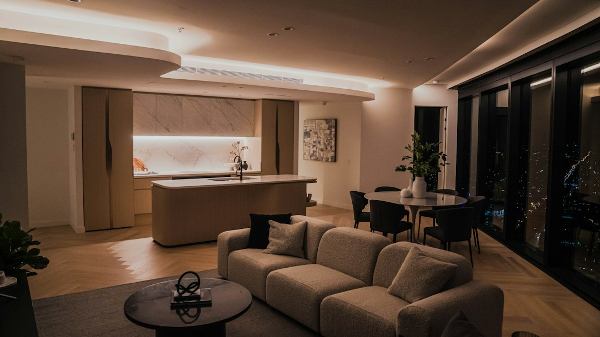

For homeowners weighing a kitchen renovation melbourne brief, the practical job is to turn layout hopes, budget limits and builder fit into a written scope before demolition starts.
Kitchen Renovation Melbourne Explained
Melbourne Kitchen Reno presents the service as a way to speak with VBA-registered kitchen renovators, starting with a free in-home design consult, a same-day reply where possible and a fixed-price written quote after measurements and scope are reviewed.
The useful reading is not that every project will be identical. The source page separates full renovations, custom cabinetry and small or apartment kitchens, which means the first decision is the kind of kitchen you are really pricing. A door-front refresh with no layout change sits in a different risk and cost band from demolition, plumbing, electrical updates, new benchtops, splashback and custom joinery.
- Full renovation: ask how design, manufacture, demolition and installation are sequenced in the written contract.
- Custom cabinetry: ask whether the cabinetmaker's finish style suits the age and detail of the home.
- Small or apartment kitchen: ask what owners corporation documentation, access limits and acoustic underlay assumptions need to be allowed for.
Budget ranges are a starting frame, not the quote
The quoted Melbourne ranges are most useful when treated as planning bands. The source describes most fully fitted projects as $25,000 to $60,000, budget refreshes as $12,000 to $30,000 and premium renovations with natural stone, custom joinery and a butler's pantry as more than $80,000. Those numbers do not replace a measured quote, because layout changes and finish selections can move the job quickly.
A good consult should make the cost drivers visible. Ask what is included in the base price, what is provisional, which hardware brand is allowed for, and how variations are approved. The source page says quality renovations commonly include soft-close runners and hinges such as Blum or Hettich, but still advises confirming the hardware brand and whether soft-close is included in the base price.
Timing depends on cabinetry, stone and appliances
The source sets a practical expectation of roughly 6 to 12 weeks from contract signing to handover for a mid-range full renovation. Within that, cabinetry and stone fabrication are described as taking around 4 to 6 weeks as a lead-in, on-site work as 2 to 4 weeks, and finishing as 1 to 2 weeks.
That sequence matters when comparing proposals. A fast start is not always useful if cabinets, stone or appliances are not ready. Before accepting a build date, ask when final measurements happen, when shop drawings or design details are locked, and what happens if an appliance choice changes after cabinetry has gone into manufacture.
- Confirm the design brief and rough budget before the home visit.
- Check that measurements and layout options are captured before the quote is finalised.
- Ask for the contract, inclusions and variation process in writing.
- Keep appliance and finish selections aligned with the agreed manufacture timeline.
Who this applies to
This guide is most relevant to Melbourne homeowners comparing a full kitchen renovation, a budget refresh, made-to-measure cabinetry or a compact apartment kitchen. It is especially useful where the project involves older housing, post-war brick homes, apartment access or a layout that needs better storage rather than a like-for-like product swap.
For period terraces, Edwardians and bungalows, the source suggests made-to-measure joinery may suit better than a flat-pack run. For compact galley, single-wall and apartment kitchens, the sharper questions are storage, bench space and any owners corporation requirements. Homeowners still shaping the layout may also compare the related kitchen design Melbourne guide before requesting a measured quote.
Quote checks before signing
A fixed-price written quote is only useful if it names the work clearly. Ask whether demolition, plumbing, electrical updates, benchtops, splashback, soft-close hardware, cabinetry manufacture and installation are all included. If domestic building insurance applies because of the contract value, the source says it belongs in the build and handover pathway, so confirm how it is handled before work begins.
Also ask how variations are priced and approved. Moving a service, changing stone, upgrading hardware or adding a butler's pantry can change more than the visible finish. A transparent process should explain who signs off the change, whether it affects timing, and how the updated price appears in the paperwork.
- Set the scope. Decide whether the job is a refresh, full renovation, custom joinery project or apartment kitchen before comparing quotes.
- Share the constraints. Give the renovator the suburb, rough budget, layout issues, timing hopes and any apartment or access requirements.
- Use the consult well. Ask for measurements, layout options, inclusions, hardware assumptions and likely fabrication timing to be discussed on site.
- Read the written quote. Check that price, inclusions, exclusions, variation rules and contract pathway match the renovation you discussed.
| Project path | What usually drives the decision | Questions to ask before committing |
|---|---|---|
| Budget refresh | Keeping the existing layout while updating visible finishes | Are door fronts, benchtop and splashback included, and is there any layout change? |
| Full renovation | Replacing cabinetry, benchtops and services as part of a larger rebuild | Who coordinates design, manufacture, demolition and installation under the written contract? |
| Custom cabinetry | Fitting joinery to a period home, unusual room or finish preference | Can the cabinetmaker show whether their finish style suits the home? |
| Apartment kitchen | Working within compact layouts and shared building requirements | What owners corporation documents, access limits or acoustic assumptions apply? |
This guide covers Melbourne kitchen renovation planning, quote checks, cost bands, timing and project fit using the supplied source details.